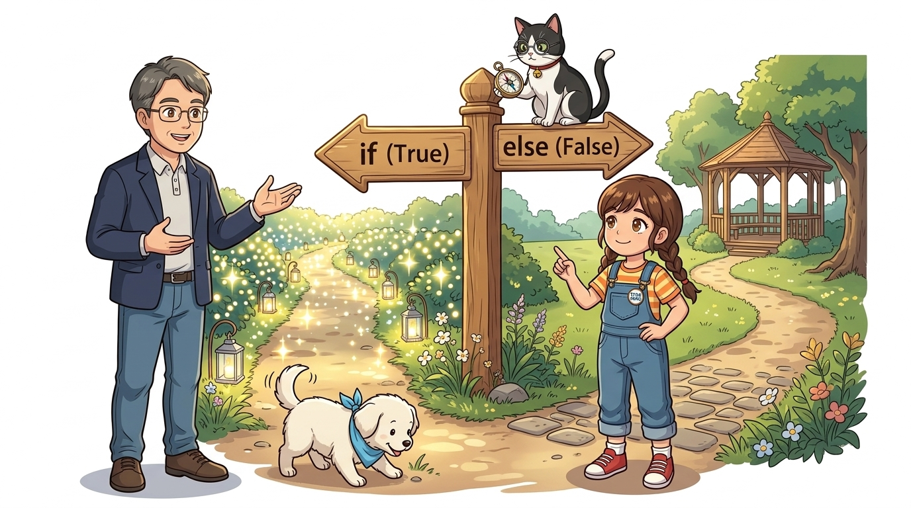
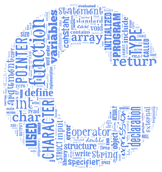
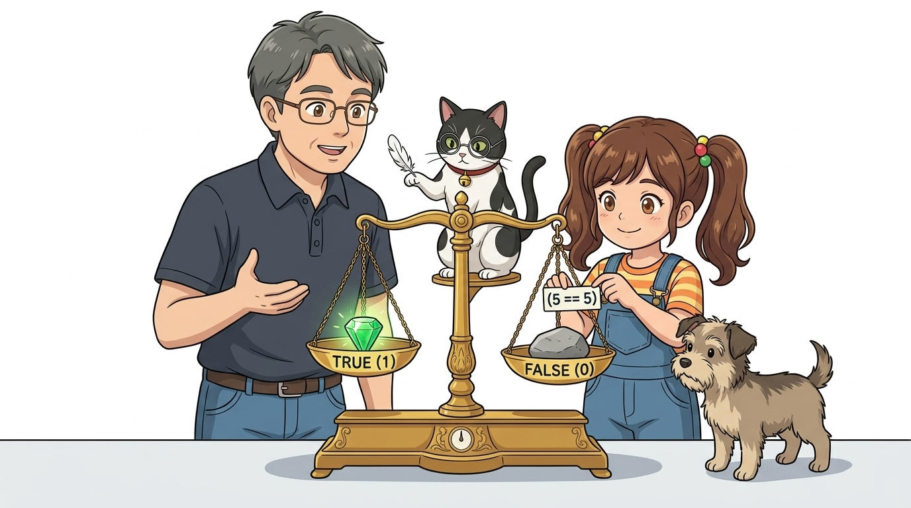
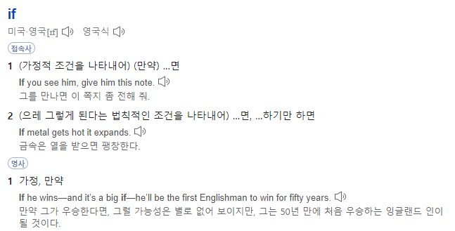
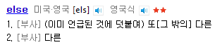
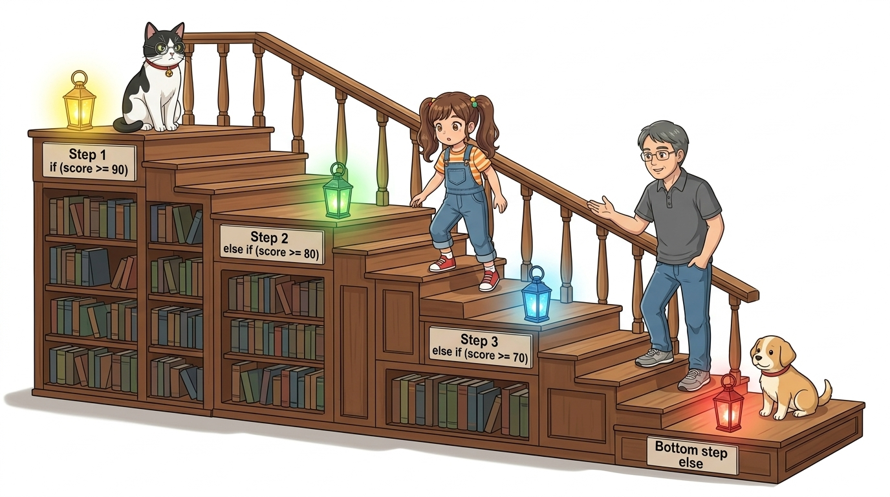
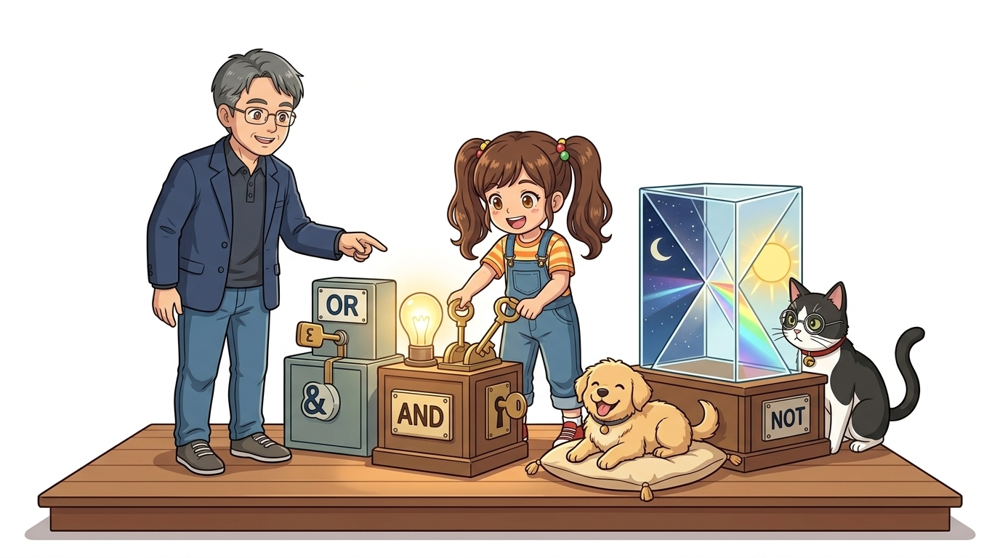
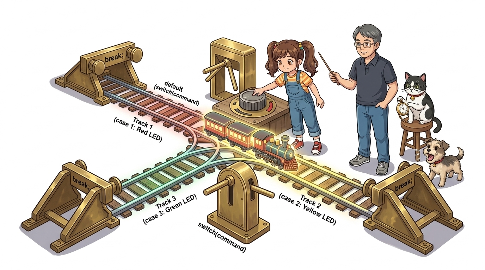
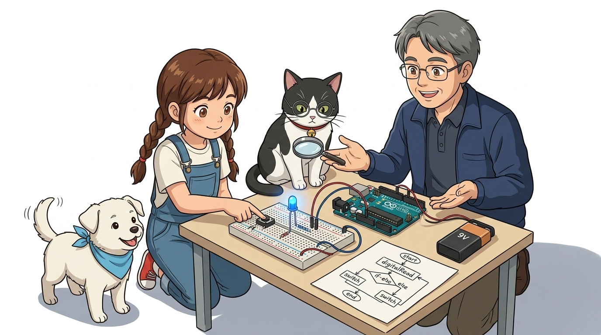

030_C언어제어문_생각의갈림길 🚦🤔
논리적 의사결정의 심장! 조건에 따라 흐름을 바꾸는 분기 제어 구조
불리언 논리(True/False), 비교 연산자, 논리 연산자(&&,||,!),if,else,else if,switch-case문법을 체계적으로 마스터합니다.

- 🖥️ 강의 슬라이드: slides.md
1. 제어문(Control Statement)이란? 🧭
컴퓨터 프로그램은 기본적으로 위에서 아래로 한 줄씩 순차적으로 명령을 실행합니다 (순차 구조).
👧 도로시: “교수님, 지니야! 스위치를 눌렀을 때만 LED가 켜지고, 손을 떼면 저절로 꺼지게 하려면 아두이노는 어떻게 판단해야 하나요?”
👨🏫 이호진 교수님: “사람처럼 주어진 조건과 상황에 따라 다른 결정을 내리는 논리의 마법! 바로 ‘조건문(if-else)’을 사용하면 된답니다.”
🐱 조수 지니: “마치 인생의 갈림길 표지판처럼 조건이 참(True)인지 거짓(False)인지에 따라 다른 길로 안내해요, 냐옹!”
🐶 토토: “멍멍! (비가 오면 우산, 맑으면 모자다 멍!)”

📌 현실 세계의 조건 분기 사례
- 실내 조도 센서 측정값이 어두워지면(조건) ➡️ 가로등 점등(행동)
- 버튼이 딸깍 눌리면(조건) ➡️ 현관문 도어락 해제(행동)
- 온습도 센서 측정값이 $28^\circ\text{C}$ 이상이면(조건) ➡️ 에어컨 모터 가동(행동)
2. 참(True)과 거짓(False)의 선택과 비교 연산자 ⚖️
컴퓨터의 모든 조건문은 오직 참(1 / True)과 거짓(0 / False)이라는 불리언(Boolean) 값으로 수렴합니다.

| 비교 연산자 | 수학적 의미 | C++ 문법 예시 ($a = 5$ 일 때) | 최종 결과값 |
|---|---|---|---|
== |
두 피연산자 값이 서로 같은가? | a == 5 |
참 (True / 1) |
!= |
두 피연산자 값이 서로 다른가? | a != 5 |
거짓 (False / 0) |
> |
왼쪽 값이 오른쪽보다 큰가? | a > 10 |
거짓 (False / 0) |
< |
왼쪽 값이 오른쪽보다 작은가? | a < 10 |
참 (True / 1) |
>= |
왼쪽 값이 크거나 같은가? | a >= 5 |
참 (True / 1) |
<= |
왼쪽 값이 작거나 같은가? | a <= 3 |
거짓 (False / 0) |
[!WARNING] 대입 연산자
=(값을 넣기)와 비교 연산자==(같은지 비교)를 절대 혼동하지 마세요!
if (a = 5)는 조건문 내부에서 $a$에 5를 넣은 뒤 항상 참으로 판정되는 초보자의 가장 흔한 버그를 유발합니다.
3. “만약 ~라면?” 가장 기본이 되는 if 문 ❓
소괄호 ( ) 안의 조건식이 참일 때만 중괄호 { } 내부의 코드 블록을 실행합니다.

int buttonState = digitalRead(2);
// 만약 버튼이 눌려 LOW 신호가 들어왔다면?
if (buttonState == LOW) {
// 조건이 '참'일 때만 이 방으로 들어와 실행됩니다!
digitalWrite(13, HIGH); // 13번 LED 켜기
}
🐱 조수 지니의 꿀팁: “만약 조건이 ‘거짓’이라면, 아두이노는 중괄호 안의 내용을 쳐다보지도 않고 다음 코드로 훌쩍 건너뛴단다!”
4. “그렇지 않다면?” 양자택일의 짝꿍 else 문 🚪
조건이 참일 때뿐만 아니라, 거짓일 때도 별도의 동작을 시키고 싶다면 else를 결합합니다.

if (buttonState == LOW) {
// [참인 경우] 버튼이 눌려있을 때
digitalWrite(13, HIGH); // LED 켜기
} else {
// [거짓인 경우] 버튼에서 손을 뗐을 때
digitalWrite(13, LOW); // LED 끄기
}
🐶 토토의 정리: “멍멍! 버튼을 누르면 켜지고, 손을 떼면 꺼지는 완벽한 인터랙티브 스위치가 되었어!”
5. 여러 조건 순차 검사: else if 사다리 🪜
선택해야 할 갈림길이 3개 이상일 때는 else if 문을 계단식으로 연결합니다.

int lightLevel = analogRead(A0);
if (lightLevel > 800) {
// 아주 밝을 때: 모든 조명 소등
digitalWrite(13, LOW);
} else if (lightLevel > 400) {
// 보통 밝기: 절전 모드 (희미한 점등)
analogWrite(13, 50);
} else {
// 칠흑같이 어두울 때: 최대 밝기 점등!
digitalWrite(13, HIGH);
}
[!NOTE]
else if사다리는 위에서부터 순서대로 검사하며, 가장 먼저 만족하는 단 하나의 블록만 실행하고 나머지 아래 조건들은 검사하지 않고 즉시 빠져나옵니다.
6. 두 개 이상의 조건 결합! C언어 논리 연산자 🔗⚡
현실의 센서 제어는 “온도가 높고 동시에 습도도 높을 때”, 또는 “화재 센서 혹은 가스 센서 둘 중 하나라도 울릴 때”처럼 복합적인 조건을 다룹니다.

📌 C언어 3대 논리 연산자
- 논리 AND (
&&):- 두 조건이 모두 참(True)일 때만 최종 결과가 참이 됩니다.
if (temp > 28 && humidity > 70)➡️ 에어컨 강력 제습 모드 가동!
- 논리 OR (
||):- 두 조건 중 하나라도 참(True)이면 최종 결과가 참이 됩니다.
if (flameDetected || gasAlert)➡️ 비상 사이렌 즉각 경보!
- 논리 NOT (
!):- 조건의 참과 거짓을 반대로 뒤집습니다 (
!True = False,!False = True). if (!digitalRead(BUTTON_PIN))➡️ 풀업 저항 버튼이 눌렸을 때(LOW일 때) 깔끔하게 참으로 판별!
- 조건의 참과 거짓을 반대로 뒤집습니다 (
// 풀업 스위치가 눌렸고(LOW) 동시에 온도가 30도 이상일 때만 팬 가동
if (digitalRead(2) == LOW && analogRead(A0) >= 600) {
digitalWrite(8, HIGH); // 팬 모터 작동
}
7. 정수형 다중 메뉴 선택기: switch - case 🎛️
비교 대상이 특정 정수나 문자 하나로 명확히 떨어질 때는 가독성이 뛰어난 switch 문을 사용합니다.

int mode = 2;
switch (mode) {
case 1:
turnOnRedLED();
break; // switch 문 탈출!
case 2:
turnOnYellowLED();
break; // 필수! 빠뜨리면 아래 case 3까지 계속 실행됨!
case 3:
turnOnGreenLED();
break;
default:
turnOffAll(); // 일치하는 case가 없을 때의 기본 안전 동작
break;
}
[!IMPORTANT] 각
case끝에break;문을 빠뜨리면, 일치하는 곳 아래에 있는 다른 case들까지 연달아 실행되는 폴스루(Fall-through) 현상이 발생하므로 각별히 주의해야 합니다.
8. 실전 응용! 버튼 상태 토글(Toggle) 알고리즘 💡🔄
C언어의 논리 부정 연산자(!)를 활용하면, 버튼을 한 번 누를 때마다 전등이 켜지고 꺼지는 토글(Toggle) 스위치를 단 한 줄로 구현할 수 있습니다!

const byte BUTTON_PIN = 2;
const byte LED_PIN = 13;
bool ledState = false; // 전역 변수: LED 켜짐/꺼짐 상태 기억
void setup() {
pinMode(BUTTON_PIN, INPUT_PULLUP); // 풀업 버튼
pinMode(LED_PIN, OUTPUT);
}
void loop() {
// 버튼이 눌렸을 때 (PULLUP이므로 눌리면 LOW)
if (digitalRead(BUTTON_PIN) == LOW) {
ledState = !ledState; // 상태 반전: false -> true -> false!
digitalWrite(LED_PIN, ledState); // 변경된 상태 출력
delay(200); // 채터링(바운싱) 방지 딜레이
}
}
👧 도로시: “
ledState = !ledState;단 한 줄로 불을 켰다 껐다 할 수 있다니, 논리 연산자!가 정말 마법 같아!”
🌟 이번 시간 핵심 정리! 🏆
축하합니다! 조건에 따라 스스로 판단하는 똑똑한 아두이노의 C언어 의사결정 회로를 완성했습니다.

📋 핵심 요약 체크리스트
- 불리언 참과 거짓: 비교 연산자(
==,!=,<,>)를 통해 조건식의 결과를 도출했습니다. - 대입과 비교 구분: 값을 넣는
=와 같은지 비교하는==를 확실히 구분합니다. - 복합 조건은 논리 연산자:
&&(AND),||(OR),!(NOT)을 적재적소에 결합했습니다. if - else사다리: 여러 단계의 센서 임계치를 계단식으로 판별했습니다.switch - case와break: 메뉴 선택기를 만들고 폴스루 방지break를 명시했습니다.
👧 도로시: “이제 센서 값에 맞춰 똑똑하게 판단할 수 있어요! 그런데 교수님, 지니야! 아까 말했던 LED 100개도 순식간에 켜는 반복문은 언제 배우나요?”
👨🏫 이호진 교수님: “바로 다음 시간입니다, 도로시! 단 3줄로 수천 번의 작업을 마법처럼 반복하는 ‘C언어 반복문(for, while)’으로 힘차게 달려가 봅시다!”
🐱 조수 지니: “지치지 않는 회전목마의 세계가 우리를 기다리고 있어요, 냐옹!”
🐶 토토: “멍멍! (회전목마 반복문 타러 가자 멍!)”